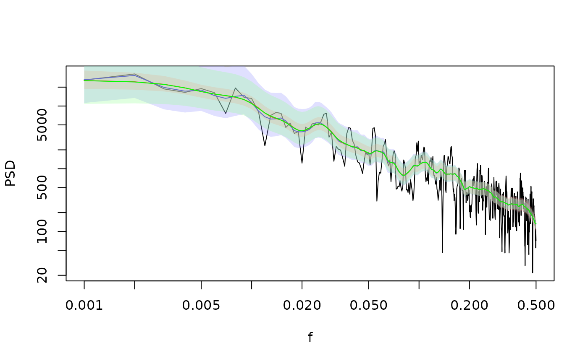
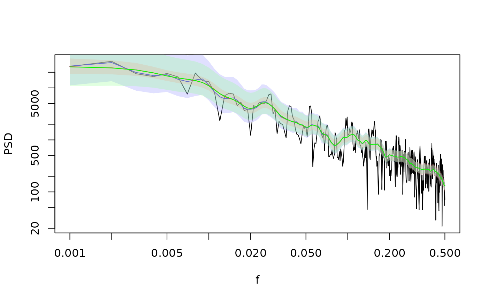

Smooth a Spectrum with Evenly Spaced Bins in Logspace
FilterSpecLog.RdSmooth a Spectrum with Evenly Spaced Bins in Logspace
Arguments
- spec
A spec object
- df.log
width of the smoother in log units
- method
single integer for choosing an endpoint constraint method; available choices are integers 0-4, see details.
Examples
library(PaleoSpec)
# simulate a timeseries with powerlaw power spectrum
a <- 100
b <- 1
N <- 1e03
set.seed(20230625)
ts1 <- SimPLS(N, beta = b, alpha = a)
sp1 <- SpecMTM(ts(ts1), bin.width = 1)
LPlot(sp1)
abline(log10(a), -b, col = "green")
 #
sp1_f3_0 <- FilterSpecLog(sp1, method = 0)
sp1_f3_2 <- FilterSpecLog(sp1, method = 2)
LPlot(sp1)
LLines(sp1_f3_0, col = "blue")
LLines(sp1_f3_2, col = "green", lty = 3)
#
sp1_f3_0 <- FilterSpecLog(sp1, method = 0)
sp1_f3_2 <- FilterSpecLog(sp1, method = 2)
LPlot(sp1)
LLines(sp1_f3_0, col = "blue")
LLines(sp1_f3_2, col = "green", lty = 3)
 sp1_df0.05 <- FilterSpecLog(sp1)
sp1_df0.1 <- FilterSpecLog(sp1, df.log = 0.1)
LPlot(sp1)
LLines(sp1_df0.05, col = "blue")
LLines(sp1_df0.1, col = "red")
## A combination of FilterSpec and FilterSpecLog
sp1_FSL <- FilterSpecLog(sp1)
sp1_FSL_FS <- FilterSpec(FilterSpecLog(sp1), spans = c(3, 5))
sp1_FS_FSL <- FilterSpecLog(FilterSpec(sp1, spans = c(3, 5)))
LPlot(sp1)
LLines(sp1_FSL, col = "blue")
LLines(sp1_FSL_FS, col = "red")
LLines(sp1_FS_FSL, col = "green")

sp1_df0.05 <- FilterSpecLog(sp1)
sp1_df0.1 <- FilterSpecLog(sp1, df.log = 0.1)
LPlot(sp1)
LLines(sp1_df0.05, col = "blue")
LLines(sp1_df0.1, col = "red")
## A combination of FilterSpec and FilterSpecLog
sp1_FSL <- FilterSpecLog(sp1)
sp1_FSL_FS <- FilterSpec(FilterSpecLog(sp1), spans = c(3, 5))
sp1_FS_FSL <- FilterSpecLog(FilterSpec(sp1, spans = c(3, 5)))
LPlot(sp1)
LLines(sp1_FSL, col = "blue")
LLines(sp1_FSL_FS, col = "red")
LLines(sp1_FS_FSL, col = "green")
